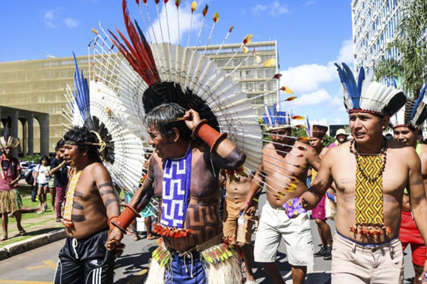
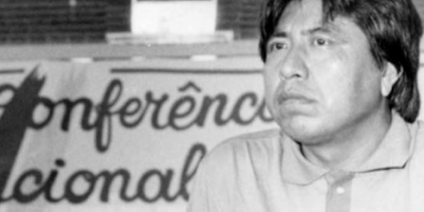
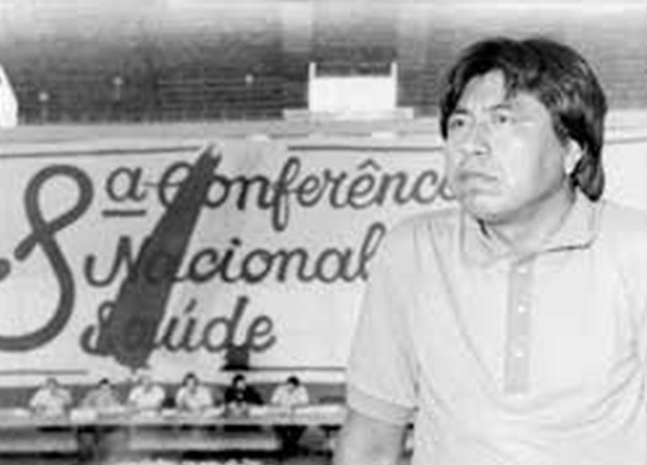
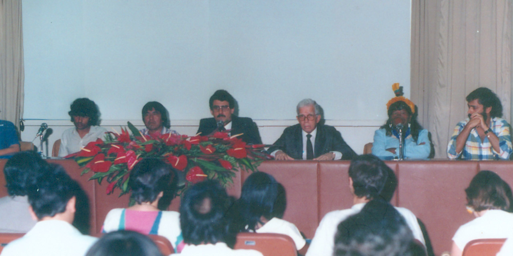
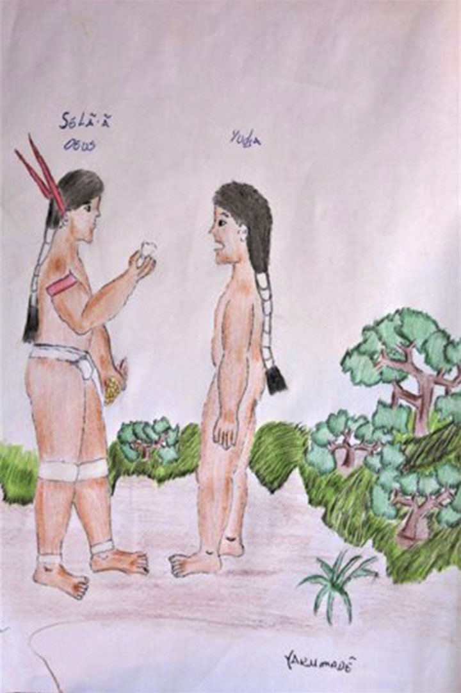

Módulo 4 | Aula 1
Diversidade Cultural, etnocentrismo e protagonismo indígena - Conceitos importantes para garantir a atenção diferenciada
Tópico 4
Protagonismo Indígena
A partir de uma atuação política que enfatiza a diversidade, os povos indígenas acumulam grande memória de lutas e de vida nos territórios, baseada em relações éticas importantes que conectam diversos seres de maneira respeitosa.
Os conhecimentos indígenas e as formas indígenas de interação no mundo inspiram para termos novos caminhos de vida, a partir da participação e do controle social, para que todos, incluindo seres humanos e seres da natureza, possam desfrutar de uma vida digna.
Essa participação e controle social indígena se refere ao protagonismo dos povos indígenas.
O protagonismo indígena tem como objetivo a luta por seus direitos, dentre eles:
o direito à terra e ao território;
o direito à autonomia;
o direito à saúde diferenciada;
o direito à educação diferenciada;
o direito à diversidade cultural.

Fonte: Mídia Índia. ATL2019
Falar do protagonismo indígena é falar do movimento que se coloca contra a dominação colonialista, contra as práticas culturais violentas de assimilação e integração que querem transformar a cultura indígena. Assim, o termo protagonismo indígena implica pensar fundamentalmente sobre as resistências, lutas e ressignificações do contato com os não indígenas.
Para falar sobre protagonismo é importante lembrar dois pontos:
é direito constitucional dessas populações viverem de acordo com seus costumes na terra que tradicionalmente habitam;
deve-se reconhecer e respeitar a forma particular delas viverem e usufruírem do território.
Tendo como base o direito à diversidade, ou seja, de poderem viver de forma plena suas formas culturais em seus territórios, os povos indígenas se organizam com autonomia política e lutam para fazer valer seus direitos constitucionais. Desse modo, diversas organizações indígenas atuam na luta por direitos e para fazerem sua própria história, criaram e transformaram suas culturas colocando em prática seus conhecimentos.
As transformações culturais acontecem e devem acontecer a partir do coletivo indígena, ou seja, as decisões sobre os rumos das mudanças não podem ser uma imposição externa, de não indígenas.
headphones
Para escutar...
“Copiô, Parente”: As vozes que transformaram: a #LutaPataxó em #VitóriaPataxó. Episódio 158.
Este podcast é um exemplo do protagonismo indígena e dos caminhos realizados para alcançar objetivos definidos junto com as lideranças indígenas. Você vai ouvir “Thyara Pataxó a indígena que mobilizou centenas de outros indígenas na internet e fez com que uma decisão judicial que colocava o povo Pataxó em risco fosse o assunto mais comentado do País”.
Essa fala é um exemplo de etnocentrismo e antagonismo à diversidade cultural.
Fonte: Youtube
O protagonismo dos povos indígenas para mediar a relação com o Estado Nacional está atrelado aos movimentos e organizações sociais. Os movimentos sociais são entendidos como ações coletivas de pessoas que se reúnem com o objetivo de mudar a ordem social existente, ou parte dela, influenciar os resultados de processos sociais e políticos e, em última instância, participar de decisões institucionais referentes à definição de políticas públicas.
Você lembra do Movimento da Reforma Sanitária Brasileira?
O Sistema Único de Saúde (SUS) é resultado desse protagonismo que envolveu a participação social de muitos grupos e diferentes pessoas que estavam insatisfeitas com o modelo de serviços de saúde que existia na época. E os povos indígenas também fizeram parte desse movimento, participando ativamente da 8.ª Conferência Nacional de Saúde que ocorreu dentro do Movimento da Reforma Sanitária Brasileira, e da 1.ª Conferência Nacional de Proteção à Saúde do Índio, em 1986, que já detalhamos neste curso.
1.ª Conferência Nacional de Proteção à Saúde do Índio Realizada nos dias 27 a 29 de novembro de 1986.



Composição da mesa com participação de Ailton Krenak, Raoni Metuktire entre outras lideranças indígenas e indigenistas.Fonte: Acervo pessoal Ana Maria Costa
Destacamos aqui dois pontos que foram levantados na 1.ª Conferência sobre a organização dos serviços:
garantir a participação das nações indígenas através de seus representantes, na formulação da política, no planejamento, na gestão, na execução e na avaliação das ações e dos serviços de saúde;
assegurar o respeito e o reconhecimento das formas diferenciadas das nações indígenas no cuidado com a saúde;
A Ata foi publicada em Janeiro de 1988, na edição especial da Revista do Centro Brasileiro de Estudos de Saúde – cebes – Saúde em Debate.
Os povos indígenas têm participado não somente na proposição de políticas públicas e avaliação de serviços, mas também têm participado na oferta dos serviços de atenção primária, que foi uma das demandas levantadas já na 1.ª Conferência Nacional de Proteção à Saúde do Índio.
Desde essa conferência, os povos indígenas têm lutado também para terem acesso às tecnologias de cuidado dos não indígenas como, por exemplo, o acesso às vacinas, aos medicamentos e aos profissionais de saúde. No entanto, os indígenas não querem que desqualifiquem ou desrespeitem os seus pajés e outros cuidadores indígenas. E, por isso, o movimento indígena alerta, também, desde a 1.ª Conferência Nacional de Proteção à Saúde do Índio, para a necessidade de envolver os povos indígenas nas etapas de formulação de políticas públicas, na execução de serviços e no acompanhamento e fiscalização das ações realizadas.
movie
Para assistir...
Protagonismo indígena na saúde:
Para saber mais sobre protagonismo indígena na saúde, a médica e coordenadora do Projeto Xingu, Sofia Mendonça, fala sobre a construção da formação dos indígenas em saúde para auxiliarem a própria comunidade.
Fonte: Youtube.
A atuação do movimento indígena foi importante também para promover mudanças na política indigenista do Estado brasileiro.
Foram os povos indígenas que, mobilizados em Assembleias, fizeram pressão quando deputados e senadores estavam escrevendo a Constituição Federal de 1988 para que o direito à diversidade e ao território fosse reconhecido na Constituição Federal. Isso significou o fim da assimilação cultural e do integracionismo, que queria transformar todos os povos indígenas em não indígenas. Enfim, a Constituição reconheceu o caráter multiétnico e pluricultural do Brasil.
Constituição Federal de 1988.
Art. 231. São reconhecidos aos índios sua organização social, costumes, línguas, crenças e tradições, e os direitos originários sobre as terras que tradicionalmente ocupam, competindo à União demarcá-las, proteger e fazer respeitar todos os seus bens.
§ 1º - São terras tradicionalmente ocupadas pelos índios as por eles habitadas em caráter permanente, as utilizadas para suas atividades produtivas, as imprescindíveis à preservação dos recursos ambientais necessários a seu bem-estar e as necessárias a sua reprodução física e cultural, segundo seus usos, costumes e tradições.
§ 2º - As terras tradicionalmente ocupadas pelos índios destinam-se a sua posse permanente, cabendo-lhes o usufruto exclusivo das riquezas do solo, dos rios e dos lagos nelas existentes.
§ 3º - O aproveitamento dos recursos hídricos, incluídos os potenciais energéticos, a pesquisa e a lavra das riquezas minerais em terras indígenas só podem ser efetivados com autorização do Congresso Nacional, ouvidas as comunidades afetadas, ficando-lhes assegurada participação nos resultados da lavra, na forma da lei.
§ 4º - As terras de que trata este artigo são inalienáveis e indisponíveis, e os direitos sobre elas, imprescritíveis.
§ 5º - É vedada a remoção dos grupos indígenas de suas terras, salvo, ad referendum do Congresso Nacional, em caso de catástrofe ou epidemia que ponha em risco sua população, ou no interesse da soberania do País, após deliberação do Congresso Nacional, garantido, em qualquer hipótese, o retorno imediato logo que cesse o risco.
§ 6º - São nulos e extintos, não produzindo efeitos jurídicos, os atos que tenham por objeto a ocupação, o domínio e a posse das terras a que se refere este artigo, ou a exploração das riquezas naturais do solo, dos rios e dos lagos nelas existentes, ressalvado relevante interesse público da União, segundo o que dispuser lei complementar, não gerando a nulidade e a extinção direito a indenização ou a ações contra a União, salvo, na forma da lei, quanto às benfeitorias derivadas da ocupação de boa-fé.
§ 7º - Não se aplica às terras indígenas o disposto no art. 174, §§ 3º e 4º.
Art. 232. Os índios, suas comunidades e organizações são partes legítimas para ingressar em juízo em defesa de seus direitos e interesses, intervindo o Ministério Público em todos os atos do processo.
A atuação do movimento indígena foi e é importante para garantir direitos destes povos e para pôr fim à política indigenista tutelar, paternalista e autoritária que acontecia quando o Estado, por meio do Serviço de Proteção ao Índio (SPI) e da Fundação Nacional do Índio (FUNAI), queria conduzir toda a vida indígena.
movie
Para assistir...
Constituição de 1988 Direitos Indígenas:
Para relembrar a luta pelos direitos indígenas na Assembleia Constituinte, assista ao vídeo de Ailton Krenak.
Fonte: Youtube.
Exemplos de protagonismo indígena em movimentos sociais indígenas.
Alguns exemplos do protagonismo indígena em movimentos sociais indígenas são:
Acampamento Terra Livre;
Marcha das Mulheres Indígenas;
FOIRN (Federação das Organizações Indígenas do Rio Negro);
HUTUKARA (organização indígena dos povos Yanomami e Ye’kuana);
Aty Guasu (Grande Assembleia dos povos Guarani e Kaiowá);
Comissão Guarani Yvyrupa (organização das lideranças guarani do sul e sudeste do Brasil);
Kunangue Aty Guasu;
ANMIGA;
APOINME (Articulação dos Povos e Organizações Indígenas do Nordeste, Minas Gerais e Espírito Santo);
ARPINSUL (Articulação dos Povos Indígenas do Sul);
Conselho do Povo Terena;
Coordenação das Organizações Indígenas da Amazônia (COIAB);
APIB (Articulação dos Povos Indígenas do Brasil);
entre outros.
Durante a pandemia de COVID-19, essas organizações indígenas apoiaram lideranças locais em diversas estratégias para enfrentar a pandemia, com a construção de barreiras sanitárias, distribuição de máscaras, distribuição de caixas d’água, distribuição de alimentos, entre outras ações.
O protagonismo indígena se refere, portanto, a fazer suas escolhas, traçar os rumos de sua história, decidirem as transformações culturais que desejam de forma autônoma, ou seja, sem políticas de tutela ou imposições externas.
Essa escolha está em muitas narrativas dos antepassados dos povos indígenas, quando, por exemplo, alguns grupos indígenas fizeram escolhas culturais no início do mundo, no momento de sua criação, o que aponta para a autonomia e protagonismo desses povos desde a origem do mundo.
question_mark
Saiba mais...

Fonte: Oficina de saúde bucal do Projeto Xingu/Unifesp/Colgate Nativo, 2005.
O Povo Yudjá tem uma história que faz parte de seu universo mítico, sobre a origem dos dentes.
Nesta história, os Yudjá negociam com o Deus criador, uma troca do tipo de dente que lhes foi dado pelo criador.
No início, o dente dos Yudjá era igual ao dente de “queixada” (porco do mato), um dente bem duro, resistente, feito de pedra. Entretanto, os Yudjá não gostaram desse dente porque era muito duro e doía a cabeça quando mastigava e pediram para o criador trocar.
O criador aceitou o pedido e colocou um dente mais mole, feito de milho, mas avisou que esse dente não seria tão resistente quanto o dente anterior e que não ia durar a vida toda. Com o tempo ele iria estragar. Por essa razão, segundo a história narrada pelo ancião Karadindi Yudjá, da aldeia Tuba-Tuba, do Parque Indígena Xingu, os dentes dos Yudjá furam, tem cárie, se desgastam com o tempo.
movie
Para assistir...
Tatatin Rape: o caminho da fumaça 2022:
Assista ao filme da ASCURI, uma produção feita junto com a Fiocruz de Mato Grosso do Sul. O filme fala sobre escolhas diárias, sobre a diversidade de saberes e cuidados à saúde no território onde vivem os Guarani e Kaiowá no Mato Grosso do Sul e sobre a articulação de saberes.
BATISTELLA, C. Abordagens contemporâneas do conceito de saúde. In: FONSECA, A. F.; CORBO, A. M. A. (Orgs.). O território e o processo saúde-doença. Rio de Janeiro: EPSJV/Fiocruz, 2007. p. 81-86.
BRASIL. Ministério da Saúde. Secretaria de Gestão do Trabalho e da Educação na Saúde. Departamento de Gestão da Educação na Saúde. Programa de Qualificação de Agentes Indígenas de Saúde (AIS) e Agentes Indígenas de Saneamento (AISAN). Brasília: Ministério da Saúde, 2016.
BRASIL. Ministério da Saúde. Secretaria de Políticas de Saúde. Projeto Promoção da Saúde. As cartas da promoção da saúde. Brasília: Ministério da Saúde, 2002.
BUSS, P. M. Promoção da saúde e qualidade de vida. Ciência & Saúde Coletiva, v. 5, n. 1, p. 163-177, 2000.
PAIM, J. O que é o SUS? Rio de janeiro: Fiocruz, 2009.
PONTE, C. F.; FALLEIROS, I. (Orgs.). Na corda bamba de sombrinha: a saúde no fio da história. Rio de Janeiro: Fiocruz/COC; Fiocruz/EPSJV, 2010.
SILVA, C. M. da C. et al. Educação em saúde: uma reflexão histórica de suas práticas. Ciência & Saúde Coletiva, v. 15, n. 5, p. 2539-2550, 2010.
Cruz, F. S. M. 2022. Letalidade branca: Negacionismo, violência anti-indígena e as políticas de genocídio. Tese de Doutorado em Antropologia Social, PPGAS, Universidade de Brasília.
Lima, A. C. de S. 1995. Um grande cerco de paz: Poder tutelar, indianidade e formação do Estado no Brasil. Petrópolis: Vozes.
Luciano, G. 2006. O índio brasileiro: o que você precisa saber sobre os povos indígenas no Brasil de hoje (Coleção Educação Para Todos. Série Vias dos Saberes). Brasília: MEC/SECAD; LACED/Museu Nacional.
Oliveira Filho, J. P. 2016. O nascimento do Brasil e outros ensaios: "pacificação", regime tutelar e formação de alteridades. Rio de Janeiro: Contra Capa.
Créditos
Ministério da Saúde
Marcelo Queiroga
Ministro
Fundação Oswaldo Cruz – Fiocruz
Nísia Trindade Lima
Presidente
Vice-Presidência de Educação, Informação e Comunicação (VPEIC) Cristiani Vieira Machado
Vice-Presidente
Campus Virtual Fiocruz
Ana Cristina da Matta Furniel
Coordenadora geral
Adélia Araújo
Coordenadora de produção
História da Saúde Pública no Brasil
Carlos Henrique Assunção Paiva
Coordenação acadêmica
Carlos Henrique Assunção Paiva
Historiador. Doutor em Saúde Coletiva pelo IMS/UERJ. Coordenador do Observatório História e Saúde/COC/Fiocruz. Professor do PPGHCS/COC/Fiocruz.
Conteudistas
Carlos Henrique Assunção Paiva
Historiador. Doutor em Saúde Coletiva pelo IMS/UERJ. Coordenador do Observatório História e Saúde/COC/Fiocruz. Professor do PPGHCS/COC/Fiocruz.
José Roberto Franco Reis
Historiador. Doutor em história social pela Unicamp. Pesquisador do Observatório História e Saúde - COC-FIOCRUZ
Luiz Antonio da Silva Teixeira
Historiador. Doutor em História Social pela USP. Coordenador adjunto do Programa de Pós-graduação em Saúde da Mulher e da Criança do Instituto Fernandes Figueira - Fiocruz; Professor dos Programas de História das ciências da Saúde e de Divulgação de Científica da Casa de Oswaldo Cruz
Luiz Alves Araújo Neto
Historiador. Doutor em História das Ciências e da Saúde pela Fiocruz. Bolsista de Pós-doutorado FAPERJ (PDR-10). Pesquisador do Observatório História e Saúde (COC/Fiocruz).
Luís Octavio Gomes de Souza
Cientista social formado pela Universidade Federal Fluminense (UFF). Pesquisador e redator freelancer em História do Brasil e História da Saúde Pública no Brasil.
Colaboradores - Relatos em áudio e vídeo
Flávio Coelho Edler
Historiador. Doutor em Saúde Coletiva pelo IMS/UERJ. Professor do PPGHCS/COC/Fiocruz.
Robert Wegner
Cientista Social. Doutor em Sociologia pelo IUPERJ/UCAM. Professor do PPGHCS/COC/Fiocruz.
Rômulo de Paula Andrade
Historiador. Doutor em História das Ciências e da Saúde pelo PPGHCS/Fiocruz. Professor do PPGHCS/COC/Fiocruz.
Tânia Maria Dias Fernandes
Graduada em Farmácia. Doutora em História Social pela USP. Professora do PPGHCS/COC/Fiocruz.
Tânia Salgado Pimenta
Historiadora. Doutora em História pela Unicamp. Professora do PPGHCS/COC/Fiocruz.
Revisão Técnica
Carlos Henrique Assunção Paiva
Historiador. Doutor em Saúde Coletiva pelo IMS/UERJ. Coordenador do Observatório História e Saúde/COC/Fiocruz. Professor do PPGHCS/COC/Fiocruz.
José Roberto Franco Reis
Historiador. Doutor em história social pela Unicamp. Pesquisador do Observatório História e Saúde - COC-FIOCRUZ.
Luiz Antonio da Silva Teixeira
Historiador. Doutor em História Social pela USP. Coordenador adjunto do Programa de Pós-graduação em Saúde da Mulher e da Criança do Instituto Fernandes Figueira - Fiocruz; Professor dos Programas de História das ciências da Saúde e de Divulgação de Científica da Casa de Oswaldo Cruz.
Luiz Alves Araújo Neto
Historiador. Doutor em História das Ciências e da Saúde pela Fiocruz. Bolsista de Pós-doutorado FAPERJ (PDR-10). Pesquisador do Observatório História e Saúde (COC/Fiocruz).
Luís Octavio Gomes de Souza
Cientista social formado pela Universidade Federal Fluminense (UFF). Pesquisador e redator freelancer em História do Brasil e História da Saúde Pública no Brasil.
Revisão de Português
Maria Angélica Marcondes Drska - Campus Virtual Fiocruz
Designer Educacional
Fernanda Sousa - Campus Virtual Fiocruz
Pedagoga, Especialista em Planejamento, Implementação e Gestão de Educação a Distância e Especialista em Gestão de Projetos
Designer de Interface
Aline Polycarpo
Designer de Interface e Interação
Danilo Blum
Desenvolvedor Front-end
Luciana Nunes
Designer de Interface e Interação
Suporte Técnico de Tecnologia da Informação
Bruno Alexandre de Oliveira - Campus Virtual Fiocruz